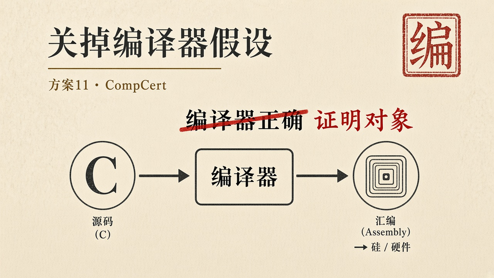
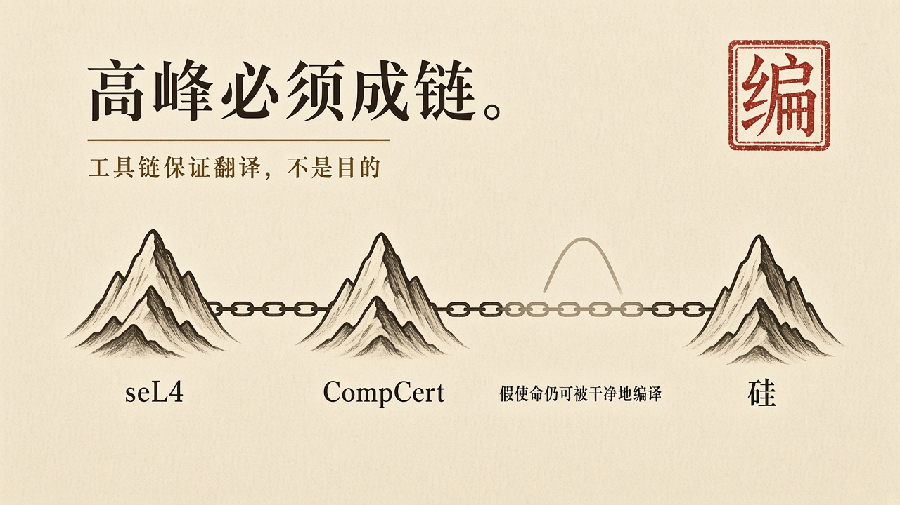

经过
CompCert 是被形式化验证的 C 编译器，也是唯一经机器辅助证明免于误编译的生产级编译器。它在 Coq 中证明：针对 C 语言的一个子集，从源代码到汇编的编译保持语义。传统编译器也可以非常可靠。可靠是工程经验。CompCert 关掉的是另一句话——「正确性证明的最后一截，我们交给编译器厂商」。那一截通常不出现在假设清单上。不出现，不等于不存在。优化可以改写，后端可以改写，链接可以改写。程序级证明若在编译之后不再成立，证明停在源文件上。
把编译器做成可证明的对象，是把工具链拉进可信计算基，又把 TCB 里这一截变成可被检查的。这与「我们用了著名编译器」不是同一件事。著名回答的是身份与市场占有。证明回答的是这一次从 C 到汇编是否保持语义。身份不是行为。边界必须同时写上：它出现过能无警告产生错误代码的缺陷；形式化 C 语义与官方标准曾有小差异。高峰不是无瑕。高峰是把瑕疵放进可以盘问的地方。
高峰必须成链。seL4 的证明停在 C。CompCert 把 C 到汇编这一截接上。汇编到硅、硅到板级、板级到系统，仍有假设。链越长，越能看见还剩哪几截是信念。链越短，越容易把信念写成已经完成的保证。2026 年 3 月，CompCert 已为 ATR 42/72 飞机的新一代多功能计算机（MFC_NG）完成合格审定。形式化验证的编译器，已经进入民航关键系统。传统实践中，为便于合格审定，常常需要关闭几乎所有编译器优化。有了正确性证明之后，可以放心地使用优化，依赖证明而非依赖代码模式的可预测性。进入现场不是学科形成，是工具链被当成适航证据的一部分。证据仍是条件式的：在 CompCert 覆盖的 C 子集里，在被证明的后端里，编译保持语义。子集之外、未被证明的插件、手工改写的汇编，都不在这句话里。

剖析
定义上，CompCert 定义的不是飞机的托付，是编译这一动作的托付：不得在翻译中改变被允许的行为。禁区是优化不得引入源程序没有的行为。能力是生成可用的机器码。禁区先于能力——这是编译器验证必须坚持的顺序。把「生成更快的代码」写在「保持语义」前面，就是红许可证在工具链上的形态。
对齐上，源语义、中间表示、汇编语义被要求对齐。这是对齐在工具链上的硬形态。它不对齐应用层的托付。用 CompCert 编译一段带红许可证的程序，得到的是语义保持的红许可证。工具链高峰会把假使命编译得很干净。
达成上，一次成功的 CompCert 编译，达成的是这一次翻译保持语义。不是达成航电使命，不是达成内核隔离，不是达成一次清算。适航采用把这一截达成写进更长的证据链。证据链仍要问运行中的这一次：是否仍在子集内，是否仍用被验证的后端，是否有人在编译后补了一段未验证的汇编。
人的位置因此改变。立法进入语言子集与语义。划界进入「哪些优化被允许」。审判进入证明对象与适航审查。飞行员不是验证者。验证者在编译器与适航证据里。这与把操作员按 “P” 继续治疗刚好相反：高峰把人从最不擅长的位置上撤下来，放到规格与证明里。撤下来不是无人负责。负责的是写出子集、维护证明、拒绝偷偷改汇编的那些位置。
对方法的借鉴是成链，不是换编译器徽章。seL4 没有 CompCert，证明停在 C，编译器是假设。有 CompCert，假设少一截。少一截不是没有假设。AWS 把 SMT 跑到每天十的九次方量级，又是另一截：规模与可用性。三截必须分开写。写成「高保证已经完成」，是把链上的三座峰压成一张海报。
